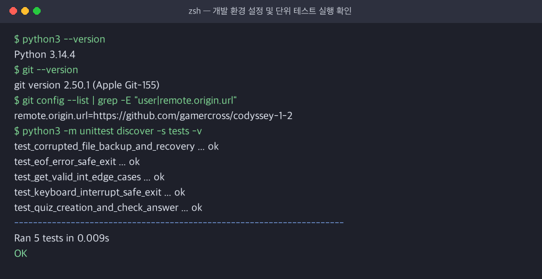

터미널에서 동작하는
나만의 IT·Python 상식 퀴즈 게임
Python 표준 라이브러리와 객체지향 3계층 클래스 설계(Quiz · StateStorage · QuizGame)를 활용하여
입력 검증, JSON 데이터 영속성, 손상 자동 백업/복구, Git 브랜치 워크플로우까지 완성한 콘솔 애플리케이션입니다.
- 개발 언어: Python 3.10+ 표준 문법 (현재
Python 3.14.4검증 완료) - 외부 의존성 Zero: 외부 패키지 없이
json,pathlib,random,unittest등 표준 라이브러리만 사용 - 데이터 영속성: 프로젝트 루트
./state.json(UTF-8 인코딩) 자동 저장 및 복구
- 원격 저장소:
https://github.com/gamercross/codyssey-1-2 - Pull Request:
https://github.com/gamercross/codyssey-1-2/pull/1 - Git 7대 명령어 완수:
init,add,commit,push,pull,checkout,clone실습 완료
퀴즈 주제 선정 이유 및 기본 6문제 출처·라이선스
이번 미션의 학습 목표인 Python 기초 문법, 클래스와 객체, JSON 파일 입출력, Git 명령어를 퀴즈 문제로 구성하여,
게임을 플레이하는 과정 자체가 핵심 개념을 복습하고 점검하는 경험이 되도록 기획했습니다.
| 번호 | 기본 탑재 퀴즈 문제 (default_data.py) |
정답 | 공식 문서 출처 및 라이선스 |
|---|---|---|---|
| Q1 | Python 프로그래밍 언어를 창시한 사람은 누구인가요? | 1. 귀도 반 로섬 | Python 공식 FAQ / CC BY 4.0 & MIT |
| Q2 | Python에서 순서가 있고 요소를 변경할 수 있는(Mutable) 자료형은? | 3. list (리스트) | Python 표준 타입 문서 / CC BY 4.0 & MIT |
| Q3 | 클래스에서 인스턴스가 생성될 때 자동 호출되는 초기화 메서드는? | 2. __init__ | Python Classes 튜토리얼 / CC BY 4.0 & MIT |
| Q4 | Git에서 원격 저장소의 변경 사항을 가져와 로컬에 병합하는 명령어는? | 3. git pull | Pro Git 공식 문서 / CC BY 4.0 & MIT |
| Q5 | 데이터를 '키-값(Key-Value)' 쌍의 텍스트로 표현하는 경량 교환 형식은? | 1. JSON | RFC 8259 / ECMA-404 표준 / CC BY 4.0 & MIT |
| Q6 | 예외(오류)가 발생할 가능성이 있는 코드를 감싸 처리하는 키워드 조합은? | 3. try / except | Python Errors 튜토리얼 / CC BY 4.0 & MIT |
hint) 속성 내장단순 정답 맞히기를 넘어 학습 효과를 높이기 위해 각 문항에 배경지식 힌트(예: "Initialize의 앞 글자에서 따온 던더 메서드입니다")를 함께 설계했습니다.
왜 함수 기반 대신 객체지향(클래스) 설계를 선택했는가?
단일 책임 원칙(SRP)에 따라 도메인 모델(Quiz), 콘솔 제어(QuizGame), 영속성 I/O(StateStorage)를 분리했습니다.
• 게임 상태(quizzes, best_score, history) 캡슐화
• 공통 입력 검증(get_valid_int, get_non_empty_str)
• 메뉴 루프 및 풀기/추가/목록/점수/삭제 제어
• 생성 시점 불변식 검증(선택지 4개, 정답 1~4)
• display(index): 문제·보기 포맷 출력
• check_answer(ans) -> bool: 정답 판정
• to_dict() / from_dict() 직렬화 인터페이스
• state.json UTF-8 읽기/쓰기 전담
• 임시 파일 기록 후 os.replace 원자적 교체
• 손상 시 .bak 백업 생성 및 기본 데이터 복구
- 상태 캡슐화: 전역 변수를 쓰거나 매 함수마다
play(quizzes, score, history)로 인자를 넘기는 대신self속성으로 일관되게 관리 - 무결성 보장: 단순
dict사용 시 오타 키("answr")를 막기 어렵지만,Quiz.__init__에서 생성 즉시 유효성을 강제 검증 - 입력 검증과 I/O 분리 이유: 콘솔 UI 변경과 파일 포맷(JSON→DB) 변경이 서로 영향을 주지 않도록 결합도를 제거하고 격리된 단위 테스트를 가능케 함
# 1. Dict -> Quiz 역직렬화 및 정답 확인 quiz = Quiz.from_dict({ "question": "Python의 창시자는?", "choices": ["귀도", "리누스", "비야네", "제임스"], "answer": 1, "hint": "네덜란드 출신" }) is_ok: bool = quiz.check_answer(1) # True # 2. StateStorage <-> QuizGame 데이터 로드/저장 quizzes, best, detail, history = storage.load() saved: bool = storage.save(quizzes, best, detail, history)
필수 요구사항 6종 + 보너스 과제 5종 완벽 구현
기본 명세를 충실히 구현하는 것에 그치지 않고, 사용자 경험(UX)을 높이는 보너스 과제 5가지를 모두 통합했습니다.
- 1~6번 메뉴 선택 및 잘못된 선택 시 허용 범위·종료 번호(
5) 친절 안내 - 풀기/추가/삭제 중 언제든
0입력으로 작업 취소 및 메뉴 복귀 지원 - 정답/오답 즉시 판별 및 오답 시 실제 정답 번호와 보기 텍스트 안내
- 문제, 4개 선택지, 정답 번호(1~4), 선택적 힌트를 검증 후 등록
- 등록 즉시
state.json에 자동 저장 및 사용자 피드백 메시지 출력 - 전체 퀴즈 개수와 각 문제의
[💡힌트 있음]배지 표시
- 100점 만점 환산 점수 산출 및 최고 점수 달성 시
🎉 새로운 최고 점수!갱신 - 아직 플레이 기록이 없을 때의 예외 안내 처리
- 프로그램 재시작 후에도 추가한 퀴즈와 최고 점수 100% 유지
- 랜덤 출제:
random.sample(self.quizzes, question_count)로 매 게임마다 문제 순서를 무작위로 섞어 출제 - 문제 수 선택:
1 ~ 전체 문제 수중 원하는 개수만 선택 가능 (그냥 Enter 입력 시 전체 문제 출제) - 힌트 및 점수 차감: 풀이 중
0입력 시 힌트를 보여주며, 힌트 1회당 최종 점수에서 5점 차감 (max(0, raw_score - penalty))
- 퀴즈 삭제 (메뉴 6번): 등록된 퀴즈 목록을 보고 번호를 선택해 삭제(
pop)한 뒤 즉시state.json에 반영 - 점수 기록 히스토리: 최고 점수뿐 아니라 모든 플레이의 일시(
YYYY-MM-DD HH:MM:SS), 문제 수, 정답 수, 힌트 횟수, 최종 점수를history배열에 누적 기록 및 출력
통합 실행 화면 및 UI 흐름 테스트 증빙
아래 탭을 클릭하여 기능별 실제 실행 스크린샷(docs/screenshots/*.png)과 핵심 동작을 확인할 수 있습니다.

- 프로그램 시작 시
state.json에서 퀴즈 개수와 최고 점수를 불러와 상단에 표시합니다. - 문자열(
abc), 음수(-1), 범위 초과(9) 입력 시 프로그램이 중단되지 않고 원인을 구체적으로 안내한 뒤 재입력 프롬프트로 복귀합니다. - 앞뒤 공백이 포함된 입력(
" 3 ")도.strip()으로 깔끔하게 정상 처리합니다.

- 출제할 문제 수(예: 2문제)를 지정하면 전체 퀴즈 중 무작위 2문제를 추출합니다.
- 문제 풀이 중
0을 입력하면💡 [힌트]가 출력되며, 해당 문제에서는 중복 힌트 차감이 발생하지 않도록 방어되어 있습니다. - 모든 문제를 풀면 기본 점수와 힌트 차감 내역, 최고 점수 갱신 여부를 한눈에 출력하고 즉시 저장합니다.

- 사용자가 직접 문제와 4개의 보기, 정답 번호(1~4), 선택적 힌트를 입력해 나만의 퀴즈를 추가할 수 있습니다.
- 문제나 보기를 빈칸(Enter)으로 입력하면 재입력을 요청하며,
0을 입력하면 등록을 취소할 수 있습니다. - 추가 직후
3. 퀴즈 목록을 조회하면 7번째 문항이 즉시 등록·유지됨을 확인할 수 있습니다.

- 최고 점수와 달성 당시의 문제 수/정답 수를 함께 출력합니다.
- 역대 모든 플레이의 일시, 정답 수, 점수, 힌트 사용 횟수가 시계열 히스토리로 출력됩니다.
- 실행 도중
Ctrl+C(KeyboardInterrupt) 발생 시 Traceback 없이 현재 데이터를 안전하게 저장하고 종료합니다.
입력 검증 경계 케이스 및 자동화 단위 테스트
사용자 입력에서 발생할 수 있는 모든 예외 상황을 정의하고, Python 표준 unittest 모듈로 자동 검증했습니다.
| 경계 케이스 유형 | 입력값 | 처리 결과 및 복구 흐름 |
|---|---|---|
| 빈 입력 (Enter) | "" |
빈 입력 안내 출력 후 재입력 루프 (문제 수 선택 시 기본값 허용) |
| 공백 문자열 | " " |
.strip() 제거 후 빈 입력으로 감지하여 재입력 |
| 앞뒤 공백 숫자 | " 3 " |
공백 제거 후 정상 정수 3으로 파싱 성공 |
| 일반 문자열 | "abc" |
ValueError 포착 → 정수 입력 안내 후 재입력 |
| 부동소수점(실수) | "1.5" |
소수점 불가 안내 메시지 출력 후 재입력 |
| 음수 및 범위 밖 | "-1", "9" |
허용 범위(min~max) 이탈 안내 후 재입력 |
| 강제 종료 신호 | Ctrl+C / EOF |
KeyboardInterrupt, EOFError 포착 → 즉시 파일 저장 후 안전 종료 |

tests/test_quiz_game.py 검증 항목test_get_valid_int_edge_cases: 7종 비정상 입력 연속 주입 후 정상 복구 검증test_corrupted_file_backup_and_recovery: 손상 JSON 백업(.bak) 및 초기화 검증test_keyboard_interrupt_safe_exit&test_eof_error_safe_exit: 비정상 종료 시 저장 검증
state.json 설계 근거, 손상 복구 및 대규모 한계·대안
단순히 파일을 읽고 쓰는 것을 넘어, 왜 중첩 JSON을 썼는지, 파일이 깨지거나 충돌할 때 어떻게 보호하는지까지 설계했습니다.
- 가독성 & 호환성: 바이너리(
pickle)와 달리 텍스트 에디터로 즉시 확인·수정이 가능하며 역직렬화 보안 취약점이 없음 - 중첩(Nested) 스키마 이점: 단일 파일 내 문제(
quizzes), 최고 기록(best_detail), 로그(history)의 네임스페이스를 분리해 스키마 확장성과 단일 I/O 로드 편의성 확보
- 원자적 교체(
os.replace):state.json.tmp에 먼저 쓴 뒤 교체하여 쓰기 도중 강제 종료로 인한 파일 파손 방지 - 재시도 & 오프라인 유지: 저장 실패 시 최대 2회 재시도 후 실패 시 인메모리 상태에서 게임 지속 보장
- 손상 파일
.bak백업: 파손 감지 시 덮어쓰기 전state.json.corrupted.TIMESTAMP.bak으로 원본 보존 후 기본 6문제로 복구
- 성능·메모리 한계: 1건만 추가해도 파일 전체를 다시 직렬화해야 하며, 수만 건 이상일 때 전체 메모리 적재 부담($O(N)$)과 인덱스 검색 불가 한계 발생
- 동시성 한계: 다중 프로세스 동시 접근 시 경쟁 상태(Lost Update) 발생 가능
- 대안: 대규모·다중 접속 환경에서는 표준 라이브러리
sqlite3또는 PostgreSQL(RDBMS) 도입
⚠️ [WARN] 데이터 파일이 손상되었거나 읽을 수 없습니다 (JSONDecodeError: Expecting property name enclosed in double quotes). 📦 [WARN] 손상된 기존 파일을 백업했습니다: state.json.corrupted.20261110_193258.bak 🔄 [INFO] 기본 퀴즈 데이터로 복구합니다.
커밋 컨벤션, 브랜치 분기·병합 및 clone / pull 실습
형식적인 커밋을 지양하고 기능 단위 원자적 커밋(17개), 기능 브랜치(feat/play-quiz) 병합, 복제·풀 실습까지 완료했습니다.

- 컨벤션:
Feat:(기능),Fix:(수정/예외 보강),Docs:(문서),Test:(단위 테스트),Chore:(설정) - 브랜치 전략:
main의 안정성을 유지하기 위해git checkout -b feat/play-quiz로 독립 개발 후git merge --no-ff로 병합 이력을 그래프에 보존

clone & pull 실습 절차- 1단계 (
clone): 별도 경로(/tmp/codyssey-1-2-clone)에 원격 저장소 복제 - 2단계 (
commit & push): 복제본에서 클래스 역할 표 문서를 추가하고 원격 푸시 - 3단계 (
pull): 본 작업 디렉터리에서git pull origin main으로 변경사항 동기화 확인
평가 자가진단 — 항목 1~4 전부 PASS
직접 실행(python3 main.py)과 단위 테스트(5 passed), git log로 하나씩 확인한 결과입니다.
| 항목 1 체크리스트 | 판정 | 확인 근거 |
|---|---|---|
| 메뉴 표시 · 풀기/추가/목록/점수 동작 | PASS | 메뉴 1~6 출력, 4개 기능 모두 실행 확인 (+ 보너스 삭제) · game.py run() |
| 정답/오답 판정 · 입력 오류(공백/문자/범위 밖/빈 입력) | PASS | Quiz.check_answer() 판정, get_valid_int()가 ""·"abc"·"1.5"·"9" 모두 안내 후 재입력 |
| 종료 후 재실행 시 퀴즈·최고 점수 유지 | PASS | 50점 기록 → 재실행 시 "퀴즈 6개, 최고점수: 50점" 로드 확인 |
| 기본 퀴즈 5개 이상 | PASS | default_data.py 6문제 (출처·라이선스 명시) |
| GitHub 업로드 · 의미 있는 커밋 10개 이상 | PASS | gamercross/codyssey-1-2 · Feat/Fix/Test/Docs/Chore 커밋 18개 (Initial 제외) |
브랜치 생성·병합 기록 (--graph) |
PASS | a012653 Merge branch 'feat/play-quiz', 1a8ac50 Merge pull request #1 |
| clone · pull 실습 흔적 | PASS | README §8.4 + docs/screenshots/clone_pull.png, 복제본에서 만든 커밋 a70a931 |
"설명할 수 있는가?" — 질문별 한 줄 답과 코드 위치
항목 2~4는 설명 능력 평가이므로, 질문마다 답의 핵심과 근거 코드를 정리했습니다. 모두 PASS로 판단합니다.
- 책임 분리:
Quiz=문제 1개(검증·채점·변환),QuizGame=메뉴·입력·진행,StateStorage=파일 I/O - 분리 기준: "바뀌는 이유"가 다르면 나눔 — 화면/입력, 게임 규칙, 저장 형식
- state.json 흐름:
run()시작 →load()1회 → 풀기·추가·삭제·종료 때마다save()(tmp 쓰기 →os.replace) - 안전 종료:
except (KeyboardInterrupt, EOFError)→save_state()후 종료 (테스트 2종) - 커밋 규칙: 기능 1개 = 커밋 1개,
Type: 한국어 요약형식
- 클래스 vs 함수: 상태(퀴즈 목록·점수)를
self에 묶어 전역 변수·긴 인자 전달을 없앰, 테스트 시 경로만 바꿔 주입 가능 - JSON: 사람이 읽을 수 있는 텍스트, dict/list와 1:1 대응, 표준 라이브러리만으로 처리,
ensure_ascii=False로 한글 유지 - try/except: 파일 없음·권한(
OSError), 문법 깨짐(JSONDecodeError), 필드 타입 오류(ValueError) - 브랜치·병합: main을 항상 실행 가능하게 두고, 기능 완성 후
--no-ff병합으로 이력 보존 - 스키마:
quizzes/best_score/best_detail/history최상위 분리 → 필드 추가 시 기존 데이터와 호환
- 1000개 이상: 저장마다 파일 전체 재작성, 전체 메모리 로드, 검색 인덱스 없음,
history무한 증가 →sqlite3전환 - 파일 손상: 덮어쓰기 전
.corrupted.시각.bak백업 → 기본 6문제로 초기화, 원자적 저장으로 손상 자체를 예방 - 채점 변경:
game.py play_quiz()157~159행 (raw_score·penalty) - 선택지 개수 변경:
quiz.py __init__/from_dict의4→game.py입력 범위(141·203·207행) 순서, 저장 코드는 그대로
- 선택지 수
4와 힌트 감점5가 여러 곳에 직접 적혀 있음 → 상수(CHOICE_COUNT,HINT_PENALTY)로 모으면 변경 지점이 한 곳으로 줄어듦 - 손상 복구 시
.bak은 보존되지만 자동 병합은 없어, 사용자가 직접 열어 되살려야 함
과제 학습 목표 핵심 정리 및 유지보수 점검 체계
미션 완료 후 스스로 설명할 수 있어야 하는 4대 영역 핵심 요약과 요구사항 변경 대응 체계입니다.
- 자료형 역할:
int(정답 번호·점수),str(문제·보기 텍스트),bool(정답 판별),list(순서 있는 선택지·퀴즈 목록),dict(키-값 기반 JSON 매핑) forvswhile: 정해진 횟수(선택지 4개·출제 문제 순회)는for, 종료 시점을 알 수 없는 메뉴 루프와 유효 입력 재시도는while True선택
__init__과 self의 역할- 클래스 사용 이유: 관련 데이터(속성)와 기능(메서드)을 하나의 설계도로 묶어 코드 중복을 줄이고 책임을 명확히 분리하기 위함
__init__&self: 인스턴스 생성 시 초기 속성을 설정하는 생성자 메서드이며,self는 생성된 인스턴스 자기 자신을 가리키는 참조
try / except- 파일 처리 과정: 열기(
open/Path.read_text) → 파싱(json.loads) → 직렬화 쓰기(json.dumps) → 닫기 자동화 - 예외 처리: 파일 누락·권한 오류(
OSError)와 문법 파손(JSONDecodeError)을 포착해 백업 후 기본 데이터로 안전 복구
- 5지선다 확장 시:
Quiz.__init__검증 길이(4→5) 및QuizGame입력 범위(1~5)만 수정하면 저장소 코드는 무변경 유지 - 변경 후 필수 검증:
python3 -m unittest discover -s tests -v실행으로 회귀 버그 즉시 점검
python3 main.py)